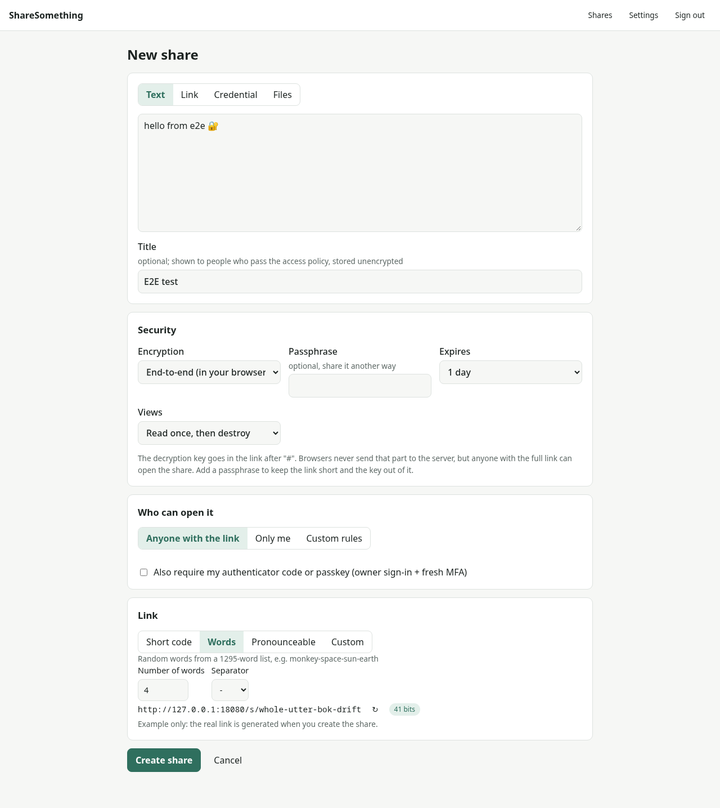
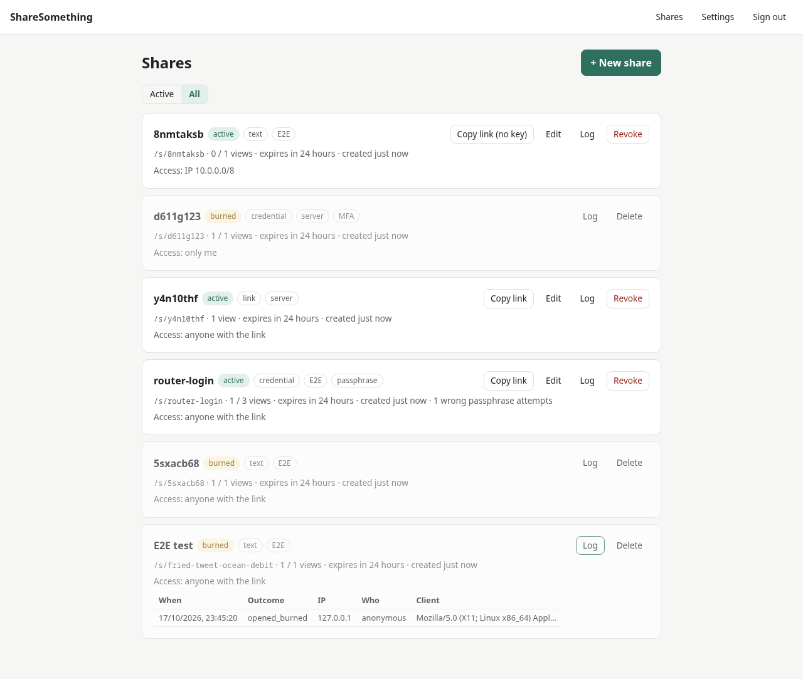
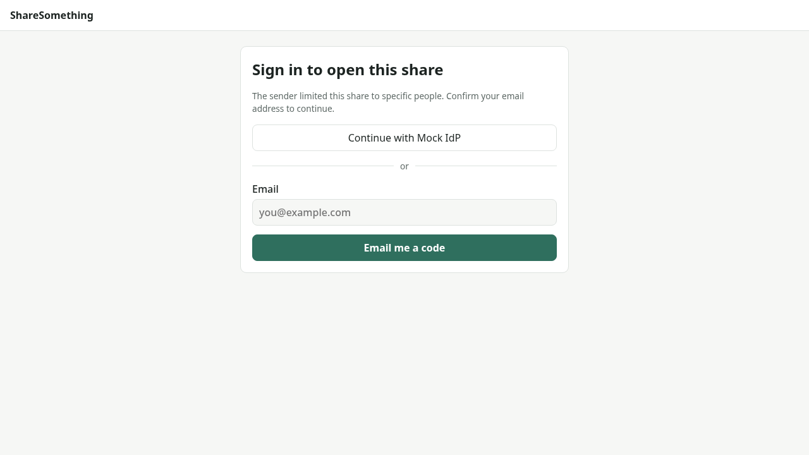
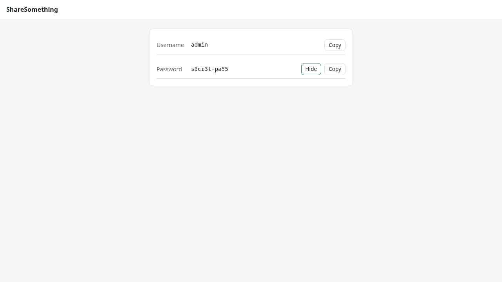
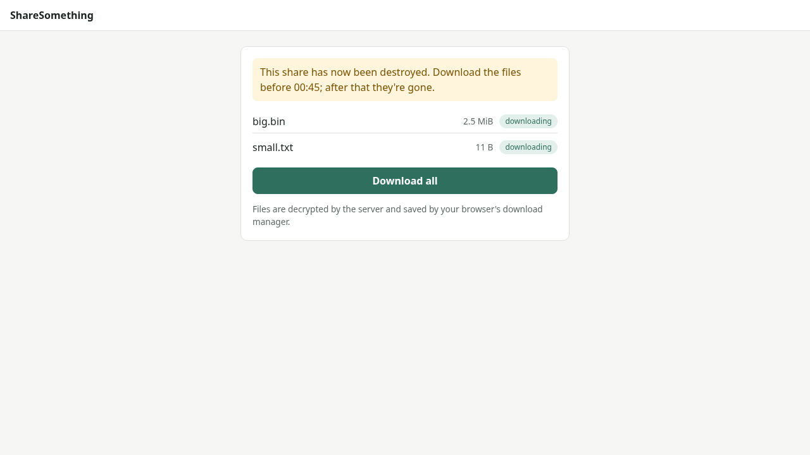
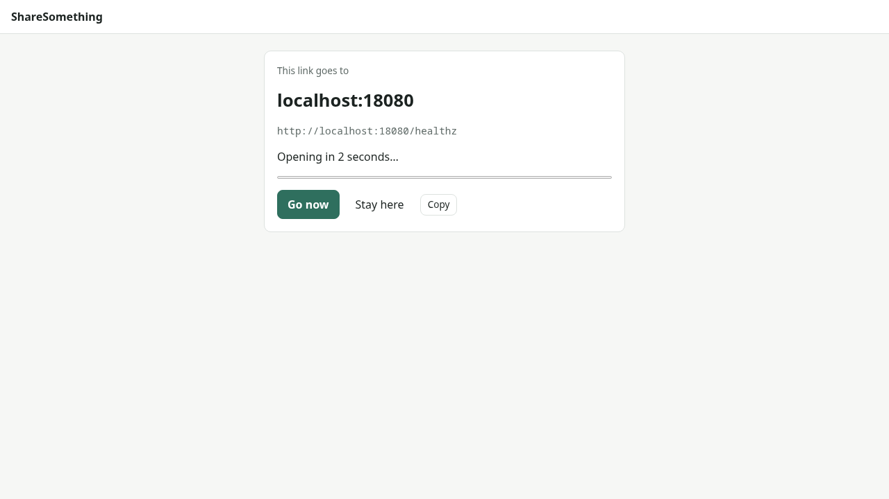
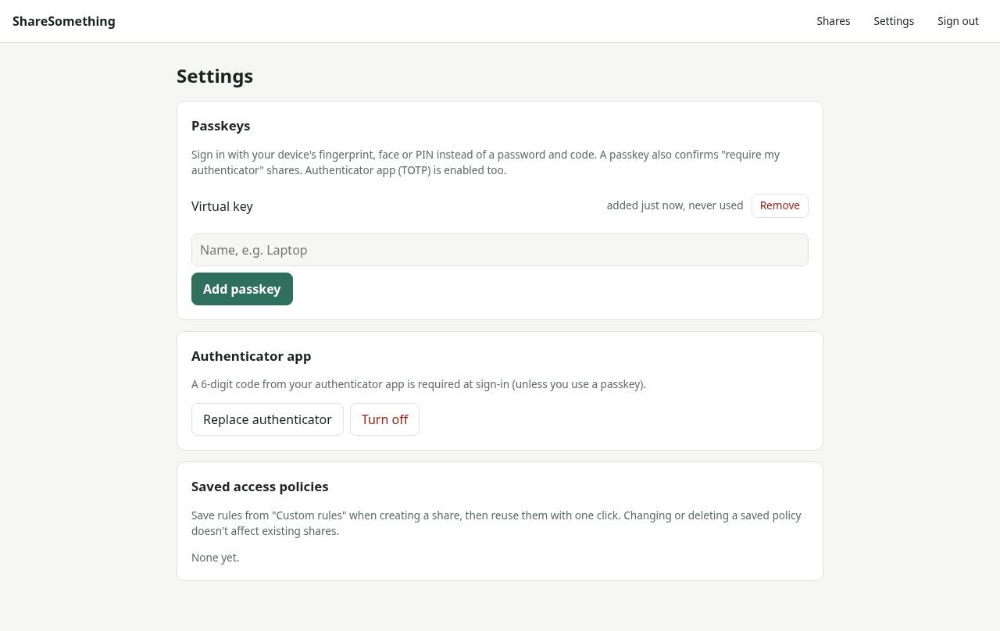

A self-hosted, single-binary app for sharing text, links, credentials and files. Pick end-to-end encryption, a view limit, an expiry and exactly who may open it, per share. Run it behind a Cloudflare Tunnel or your reverse proxy.

Most sharing tools use one setting for everything. Here every share chooses its own.
| You want to… | Settings |
|---|---|
| Move an API key between your own PCs | Only me, fresh passkey/TOTP required, read once |
| Give a guest the Wi-Fi password | Short link /s/wifi-guest, passphrase told in person, expires tonight |
| Share a doc link with the team | Anyone on the office IP range, unlimited views, 30 days |
| Send contract PDFs to a client | Anyone @client.com who confirms an emailed code or signs in with Google, 3 downloads |
| Hand out a short link | /s/launch shows the destination for 5 seconds, then opens it |
Everything is configured per share, from the same simple form.
AES-256-GCM in the browser, with the key in the link's #fragment or derived from a passphrase (argon2id). Or server-side encryption with a per-share key.
Read once, N views or an expiry. Content is wiped, not hidden. An explicit "Reveal" stops chat link previews from burning it.
Allow / Require / Block rules on IP ranges, countries, email addresses, domains or "only me", modelled on Cloudflare Access. Save rule sets and reuse them.
Emailed one-time codes, OIDC (Google, Microsoft, Keycloak, Authentik…) or GitHub. Only verified emails count.
Multi-file shares, encrypted in 1 MiB chunks, streamed straight to disk on download, so multi-GB files never sit in memory.
Show the destination for a few seconds, then open it, with the same expiry, access rules and access log as every other share.
Passwordless owner sign-in with passkeys, an authenticator app, and per-share "require fresh MFA".
Approve each open live, release content only from a set time, or split the key between key holders so any k of them (and nobody alone) can open it.
Hash-chained, tamper-evident audit trail of every action, with streaming to Splunk, Elastic, Sentinel, QRadar or any syslog/webhook SIEM.
Pluggable link styles: k7m2qx9d, monkey-space-sun-earth, GUIDs, templates like acme-{word}-{digits:4} or your own, each with a guessability hint.
About a 22 MB distroless image with one /data volume. Ready-made Compose files for cloudflared and Caddy. Proxy-aware client IPs.
The owner dashboard, and what recipients see.






Designed so the easy path is the safe one.
X-Forwarded-For.no-referrer, no-store, SameSite=Strict sessions, replay-proof TOTP, WebAuthn passkeys and per-IP rate limits.Try it locally in a minute, then put it behind TLS.
docker build -t sharesomething https://github.com/mnj/ShareSomething.git
docker run -d --name sharesomething -p 8080:8080 -v ss-data:/data \
-e SS_BASE_URL=http://localhost:8080 sharesomething
docker exec -it sharesomething sharesomething admin init
Open http://localhost:8080 and sign in. For production, use the
Cloudflare Tunnel or
Caddy Compose files. All options are in
config.example.toml.